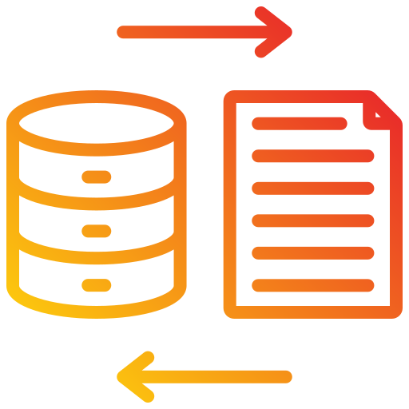
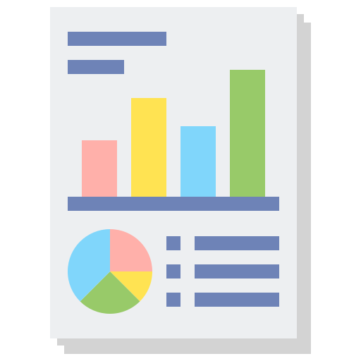

Murilo Arguello
Desenvolvedor Python e de Dashboards
Olá! Meu nome é Murilo Arguello e sou desenvolvedor de softwares e de dashboards. Sou especialista em interpretação de problemas, processamento de dados, análises exploratórias e visualização de resultados através da linguagem Python e da ferramenta Power BI. Minha missão é ajudar as pessoas na resolução de problemas através da construção de programas específicos e na automação de tarefas do seu cotidiano.
Com minha habilidade de aprendizado contínuo, estou sempre procurando aprimorar minhas habilidades para oferecer soluções ainda mais eficientes e inovadoras. Se você precisar de alguém versátil e confiável, pode contar comigo para ajudá-lo a alcançar seus objetivos.
Meus Projetos
Conheça os meus principais projetos:
Web Scraping do LinkedIn com Python para Aquisição de Dados sobre Vagas de Emprego
Análise de Vagas de Emprego ao Longo do Tempo no Power Bi
Minhas Skills
Conheça as Tecnologias que domino:
Python

Power BI
 